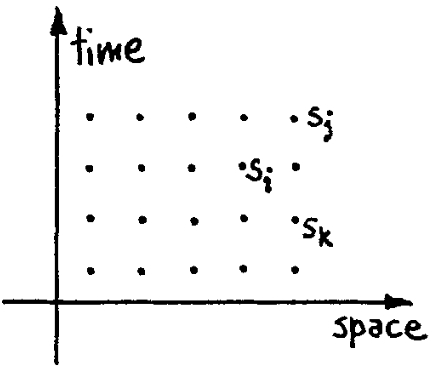

(Received )
On the program it says this is a keynote speech--and I don't know what a keynote speech is. I do not intend in any way to suggest what should be in this meeting as a keynote of the subjects or anything like that. I have my own things to say and to talk about and there's no implication that anybody needs to talk about the same thing or anything like it. So what I want to talk about is what Mike Dertouzos suggested that nobody would talk about. I want to talk about the problem of simulating physics with computers and I mean that in a specific way which I am going to explain. The reason for doing this is something that I learned about from Ed Fredkin, and my entire interest in the subject has been inspired by him. It has to do with learning something about the possibilities of computers, and also something about possibilities in physics. If we suppose that we know all the physical laws perfectly, of course we don't have to pay any attention to computers. It's interesting anyway to entertain oneself with the idea that we've got something to learn about physical laws; and if I take a relaxed view here (after all I'm here and not at home) I'll admit that we don't understand everything.
The first question is, What kind of computer are we going to use to simulate physics? Computer theory has been developed to a point where it realizes that it doesn't make any difference; when you get to a universal computer, it doesn't matter how it's manufactured, how it's actually made. Therefore my question is, Can physics be simulated by a universal computer? I would like to have the elements of this computer locally interconnected, and therefore sort of think about cellular automata as an example (but I don't want to force it). But I do want something involved with the locality of interaction. I would not like to think of a very enormous computer with arbitrary interconnections throughout the entire thing.
Now, what kind of physics are we going to imitate? First, I am going to describe the possibility of simulating physics in the classical approximation, a thing which is usuaUy described by local differential equations. But the physical world is quantum mechanical, and therefore the proper problem is the simulation of quantum physics--which is what I really want to talk about, but I'U come to that later. So what kind of simulation do I mean? There is, of course, a kind of approximate simulation in which you design numerical algorithms for differential equations, and then use the computer to compute these algorithms and get an approximate view of what ph2csics ought to do. That's an interesting subject, but is not what I want to talk about. I want to talk about the possibility that there is to be an exact simulation, that the computer will do exactly the same as nature. If this is to be proved and the type of computer is as I've already explained, then it's going to be necessary that everything that happens in a finite volume of space and time would have to be exactly analyzable with a finite number of logical operations. The present theory of physics is not that way, apparently. It allows space to go down into infinitesimal distances, wavelengths to get infinitely great, terms to be summed in infinite order, and so forth; and therefore, if this proposition is right, physical law is wrong.
So good, we already have a suggestion of how we might modify physical law, and that is the kind of reason why I like to study this sort of problem. To take an example, we might change the idea that space is continuous to the idea that space perhaps is a simple lattice and everything is discrete (so that we can put it into a finite number of digits) and that time jumps discontinuously. Now let's see what kind of a physical world it would be or what kind of problem of computation we would have. For example, the first difficulty that would come out is that the speed of light would depend slightly on the direction, and there might be other anisotropies in the physics that we could detect experimentally. They might be very small anisotropies. Physical knowledge is of course always incomplete, and you can always say we'll try to design something which beats experiment at the present time, but which predicts anistropies on some scale to be found later. That's fine. That would be good physics if you could predict something consistent with all the known facts and suggest some new fact that we didn't explain, but I have no specific examples. So I'm not objecting to the fact that it's anistropic in principle, it's a question of how anistropic. If you tell me it's so-and-so anistropic, I'll tell you about the experiment with the lithium atom which shows that the anistropy is less than that much, and that this here theory of yours is impossible.
Another thing that had been suggested early was that natural laws are reversible, but that computer rules are not. But this turned out to be false; the computer rules can be reversible, and it has been a very, very useful thing to notice and to discover that. (Editors' note: see papers by Bennett, Fredkin, and Toffoli, these Proceedings). This is a place where the relation- ship of physics and computation has turned itself the other way and told us something about the possibilities of computation. So this is an interesting subject because it tells us something about computer rules, and might tell us something about physics.
The rule of simulation that I would like to have is that the number of computer elements required to simulate a large physical system is only to be proportional to the space-time volume of the physical system. I don't want to have an explosion. That is, if you say I want to explain this much physics, I can do it exactly and I need a certain-sized computer. If doubling the volume of space and time means I'll need an exponentially larger computer, I consider that against the rules (I make up the rules, I'm allowed to do that). Let's start with a few interesting questions.
First I'd like to talk about simulating time. We're going to assume it's discrete. You know that we don't have infinite accuracy in physical measurements so time might be discrete on a scale of less than 10 -27 sec. (You'd have to have it at least like to this to avoid clashes with experiment--but make it 10 -41 sec. if you like, and then you've got us!)
One way in which we simulate timewin cellular automata, for example --is to say that "the computer goes from state to state." But really, that's using intuition that involves the idea of time--you're going from state to state. And therefore the time (by the way, like the space in the case of cellular automata) is not simulated at all, it's imitated in the computer.
An interesting question comes up: "Is there a way of simulating it, rather than imitating it?" Well, there's a way of looking at the world that is called the space-time view, imagining that the points of space and time are all laid out, so to speak, ahead of time. And then we could say that a "computer" rule (now computer would be in quotes, because it's not the standard kind of computer which cperates in time) is: We have a state s~ at each point i in space-time. (See Figure 1.) The state s i at the space time point i is a given function $F_i(s_j,,s_k,...)$ of the state at the points $j$, $k$ in some neighborhood of $i$:
\[ s_i = F_i (s_j,,s_k,...) \]

You'll notice immediately that if this particular function is such that the value of the function at $i$ only involves the few points behind in time, earlier than this time i, all I've done is to redescribe the cellular automaton, because it means that you calculate a given point from points at earlier times, and I can compute the next one and so on, and I can go through this in that particular order. But just let's us think of a more general kind of computer, because we might have a more general function. So let's think about whether we could have a wider case of generality of interconnections of points in space-time. If F depends on a//the points both in the future and the past, what then? That could be the way physics works. I'll mention how our theories go at the moment. It has turned out in many physical theories that the mathematical equations are quite a bit simplified by imagining such a thing--by imagining positrons as electrons going backwards in time, and other things that connect objects forward and backward. The important question would be, if this computer were laid out, is there in fact an organized algorithm by which a solution could be laid out, that is, computed? Suppose you know this function F, and it is a function of the variables in the future as well. How would you lay out numbers so that they automatically satisfy the above equation? It may not be possible. In the case of the cellular automaton it is, because from a given row you get the next row and then the next row, and there's an organized way of doing it. It's an interesting question whether there are circumstances where you get functions for which you can't think, at least right away, of an organized way of laying it out. Maybe sort of shake it down from some approximation, or something, but it's an interesting different type of computation.
Question: "Doesn't this reduce to the ordinary boundary value, as opposed to initial-value type of calculation?"
Answer: "Yes, but remember this is the computer itself that I'm describing."
It appears actually that classical physics is causal. You can, in terms of the information in the past, if you include both momentum and position, or the position at two different times in the past (either way, you need two pieces of information at each point) calculate the future in principle. So classical physics is local, causal, and reversible, and therefore apparently quite adaptable (except for the discreteness and so on, which I already mentioned) to computer simulation. We have no difficulty, in principle, apparently, with that.
Turning to quantum mechanics, we know immediately that here we get only the ability, apparently, to predict probabilities. Might I say immediately, so that you know where I really intend to go, that we always have had (secret, secret, close the doors!) we always have had a great deal of difficulty in understanding the world view that quantum mechanics represents. At least I do, because I'm an old enough man that I haven't got to the point that this stuff is obvious to me. Okay, I still get nervous with it. And therefore, some of the younger students... you know how it always is, every new idea, it takes a generation or two until it becomes obvious that there's no real problem. It has not yet become obvious to me that there's no real problem. I cannot define the real problem, therefore I suspect there's no real problem, but I'm note sure there's no real problem. So that's why I like to investigate things. Can I learn anything from asking this question about computers--about this may or may not be mystery as to what the world view of quantum mechanics is? So I know that quantum mechanics seem to involve probability--and I therefore want to talk about simulating probability.
Well, one way that we could have a computer that simulates a probabilistic theory, something that has a probability in it, would be to calculate the probability and then interpret this number to represent nature. For example, let's suppose that a particle has a probability P(x, t) to be at x at a time t. A typical example of such a probability might satisfy a differential equation, as, for example, if the particle is diffusing:
\[ \frac{\partial P(x,t)}{\partial t} = -\Delta^2P(x,t) \]
Now we could discretize t and x and perhaps even the probability itself and solve this differential equation like we solve any old field equation, and make an algorithm for it, making it exact by discretization. First there'd be a problem about discretizing probability. If you are only going to take $k$ digits it would mean that when the probability is less that $2^{-k}$ of something happening, you say it doesn't happen at all. In practice we do that. If the probability of something is $10^{-700}$, we say it isn't going to happen, and we're not caught out very often. So we could allow ourselves to do that. But the real difficulty is this: If we had many particles, we have $R$ particles, for example, in a system, then we would have to describe the probability of a circumstance by giving the probability to find these particles at points $x_1, x_2, ..., x_R$ at the time $t$. That would be a description of the probability of the system. And therefore, you'd need a k-digit number for every configuration of the system, for every arrangement of the $R$ values of $x$. And therefore if there are $N$ points in space, we'd need $N^R$ configurations. Actually, from our point of view that at each point in space there is information like electric fields and so on, R will be of the same order as N if the number of information bits is the same as the number of points in space, and therefore you'd have to have something like $N^N$ configurations to be described to get the probability out, and that's too big for our computer to hold if the size of the computer is of order $N$.
We emphasize, if a description of an isolated part of nature with $N$ variables requires a general function of N variables and if a computer stimulates this by actually computing or storing this function then doubling the size of nature ($N\rightarrow 2N$) would require an exponentially explosive growth in the size of the simulating computer. It is therefore impossible, according to the rules stated, to simulate by calculating the probability.
Is there any other way? What kind of simulation can we have? We can't expect to compute the probability of configurations for a probabilistic theory. But the other way to simulate a probabilistic nature, which I'll call % for the moment, might still be to simulate the probabilistic nature by a computer $\mathrm{C}$ which itself is probabilistic, in which you always randomize the last two digits of every number, or you do something terrible to it. So it becomes what I'll call a probabilistic computer, in which the output is n~at a unique function of the input. And then you try to work it out so that it simulates nature in this sense: that $\mathrm{C}$ goes from some state--initial state if you like--to some final state with the same probability that % goes from the corresponding initial state to the corresponding final state. Of course when you set up the machine and let nature do it, the imitator will not do the same thing, it only does it with the same probability. Is that no good? No it's O.K. How do you know what the probability is? You see, nature's unpredictable; how do you expect to predict it with a computer? You can't, --it's unpredictable if it's probabilistic. But what you really do ila a probabilistic system is repeat the experiment in nature a large number of times. If you repeat the same experiment in the computer a large number of times (and that doesn't take any more time than it does to do the same thing in nature of course), it will give the frequency of a given final state proportional to the number of times, with approximately the same rate (plus or minus the square root of $n$ and all that) as it happens in nature. In other words, we could imagine and be perfectly happy, I think, with a probabilistic simulator of a probabilistic nature, in which the machine doesn't exactly do what nature does, but if you repeated a particular type of experiment a sufficient number of times to determine nature's probability, then you did the corresponding experiment on the computer, you'd get the corresponding probability with the corresponding accuracy (with the same kind of accuracy of statistics).
So let us now think about the characteristics of a local probabilistic computer, because I'll see if I can imitate nature with that (by "nature" I'm now going to mean quantum mechanics). One of the characteristics is that you can determine how it behaves in a local region by simply disregarding what it's doing in all other regions. For example, suppose there are variables in the system that describe the whole world ($x_A, x_B$)--ythe variables $x_A$ you're interested in, they're "around here"; $x_B$ are the whole result of the world. If you want to know the probability that something around here is happening, you would have to get that by integrating the total probability of all kinds of possibilities over $x_B$. If we had computed this probability, we would still have to do the integration
\[ P_A(xA) = \int P(x_A, x_B)dx_B \]
which is a hard job! But if we have imitated the probability, it's very simple to do it: you don't have to do anything to do the integration, you simply disregard what the values of x s are, you just look at the region $x_A$. And therefore it does have the characteristic of nature: if it's local, you can find out what's happening in a region not by integrating or doing an extra operation, but merely by disregarding what happens elsewhere, which is no operation, nothing at all.
The other aspect that I want to emphasize is that the equations will have a form, no doubt, something like the following. Let each point $i=1,2,...,N$ in space be in a state si chosen from a small state set (the size of this set should be reasonable, say, up to $2^5$). And let the probability to find some configuration ${s_i}$ (a set of values of the state $s_i$ at each point $i$) be some number $P({s_i})$. It satisfies an equation such that at each jump in time
\[ P_A(xA) = \int P(x_A, x_B)dx_B \]
where $m(s_i|s'_j,s'_k...)$ is the probability that we move to state $s_i$ at point $i$ when the neighbors have values $s'_j, s'_k, ...$ where $j$, $k$, etc. are points in the neighborhood of $i$. As $j$ moves far from $i$, $m$ becomes ever less sensitive to $s'_j$. At each change the state at a particular point $i$ will move from w h a t it was to a state $s$ with a probability $m$ that depends only upon the states of the neighborhood (which may be so defined as to include the point $i$ itself). This gives the probability of making a transition. It's the same as in a cellular automaton; only, instead of its being definite, it's a probability. Tell me the environment, and I'll tell you the probability after a next moment of time that this point is at state s. And that's the way it's going to work, okay? So you get a mathematical equation of this kind of form.
Now I explicitly go to the question of how we can simulate with a computer - - a universal automaton or something--the quantum-meclianJcal effects. (The usual formulation is that quantum mechanics has some sort of a differential equation for a function ~k.) If you have a single particle, q, is a function of x and t, and this differential equation could be simulated just like my probabilistic equation was before. That would be all right and one has seen people make little computers which simulate the Schröedinger equation for a single particle. But the full description of quantum mechanics for a large system with R particles is given by a function $\Psi(x_1, x_2, ..., x_R, t)$ which we call the amplitude to find the particles $x_1, ..., x_R$, and therefore, because it has too many variables, it cannot be simulated with anormal computer with a number of elements proportional to R or proportional to $N$. We had the same troubles with the probability in classical physics. A n d therefore, the problem is, how can we simulate the quantum mechanics? There are two ways that we can go about it. We can give up on our rule about what the computer was, we can say: Let the computer itself be built of quantum mechanical elements which obey quantum mechanical laws. Or we can turn the other way and say: Let the computer still be the same kind that we thought of before--a logical, universal automaton; can we imitate this situation? And I'm going to separate my talk here, for it branches into two parts.
The first branch, one you might call a side-remark, is, Can you d o it with a new kind of computer - - a quantum computer? (I'll come back to the other branch in a moment.) Now it turns out, as far as I can tell, that you can simulate this with a quantum system, with quantum computer elemexats. It's not a Turing machine, but a machine of a different kind. If we disregard the continuity of space and make it discrete, and so on, as an approximation (the same way as we allowed ourselves in the classical case), it does seem to be true that all the various field theories have the same kind of behavior, and can be simulated in every way, apparently, with little latticeworks of spins and other things. It's been noted time and time again that the phenomena of field theory (if the world is made in a discrete lattice) are well imitated by many phenomena in solid state theory (which is simply the analysis of a latticework of crystal atoms, and in the case of the kind of solid state I mean each atom is just a point which has numbers associated with it, with quantum-mechanical rules). For example, the spin waves in a spin lattice imitating Bose-particles in the field theory. I therefore believe it's true that with a suitable class of quantum machines you could imitate any quantum system, including the physical world. But I don't know whether the general theory of this intersimulation of quantum systems has ever been worked out, and so I present that as another interesting problem: to work out the classes of different kinds of quantum mechanical systems which are really intersimulatable--which are equivalent--as has been done in the case of classical computers. It has been found that there is a kind of universal computer that can do anything, and it doesn't make much difference specifically how it's designed. The same way we should try to find out what kinds of quantum mechanical systems are mutually intersimulata- ble, and try to find a specific class, or a character of that class which will simulate everything. What, in other words, is the universal quantum simulator? (assuming this discretization of space and time). If you had discrete quantum systems, what other discrete quantum systems are exact imitators of it, and is there a class against which everything can be matched? I believe it's rather simple to answer that question and to find the class, but I just haven't done it.
Suppose that we try the following guess: that every finite quantum mechanical system can be described exactly, imitated exactly, by supposing that we have another system such that at each point in space-time this system has only two possible base states. Either that point is occupied, or unoccupied--those are the two states. The mathematics of the quantum mechanical operators associated with that point would be very simple.
\[ \begin{aligned} a = \mathrm{ANNIHILATE} &= \begin{array}{c|cc} & \mathrm{OCC} & \mathrm{UN} \\ \hline \mathrm{OCC} & 0 & 0 \\ \mathrm{UN} & 1 & 0 \end{array} = \frac{1}{2}(\sigma_x - i\sigma_y) \\[1.5em] a^\ast = \mathrm{CREATE} &= \begin{pmatrix} 0 & 1 \\ 0 & 0 \end{pmatrix} = \frac{1}{2}(\sigma_x + i\sigma_y) \\[1.5em] n = \mathrm{NUMBER} &= \begin{pmatrix} 1 & 0 \\ 0 & 0 \end{pmatrix} = a^\ast a = \frac{1}{2}(1 + \sigma_z) \\[1.5em] 1 = \mathrm{IDENTITY} &= \begin{pmatrix} 1 & 0 \\ 0 & 1 \end{pmatrix} \end{aligned} \]
There would be an operator a which annihilates if the point is occupied --it changes it to unoccupied. There is a conjugate operator $a^*$ which does the opposite: if it's unoccupied, it occupies it. There's another operator n called the number to ask, Is something there? The little matrices tell y o u what they do. If it's there, n gets a one and leaves it alone, if it's not there, nothing happens. That's mathematically equivalent to the product of the other two, as a matter of fact. And then there's the identity, ~, which we always have to put in there to complete our mathematics--it doesn't do a damn thing!
By the way, on the right-hand side of the above formulas the same operators are written in terms of matrices that most physicists find more convenient, because they are Hermitian, and that seems to make it easier for them. They have invented another set of matrices, the Pauli o matrices:
1°) o:(0 01) o_(0 i -i)0 And these are called spin--spin one-half--so sometimes people say you're talking about a spin-one-half lattice. The question is, if we wrote a Hamiltonian which involved only these operators, locally coupled to corresponding operators on the other space-time points, could we imitate every quantum mechanical system which is discrete and has a finite number of degrees of freedom? I know, almost certainly, that we could do that for any quantum mechanical system which involves Bose particles. I'm not sure whether Fermi particles could be described by such a system. So I leave that open. Well, that's an example of what I meant by a general quantum mechanical simulator. I'm not sure that it's sufficient, because I'm not sure that it takes care of Fermi particles. 5. CAN QUANTUM SYSTEMS BE PROBABILISTICALLY SIMULATED BY A CLASSICAL COMPUTER? Now the next question that I would like to bring up is, of course, the interesting one, i.e., Can a quantum system be probabilisticaUy simulated by a classical (probabilistic, I'd assume) universal computer? In other words, a computer which will give the same probabilities as the quantum system does. If you take the computer to be the classical kind I've described so far, (not the quantum kind described in the last section) and there're no changes in any laws, and there's no hocus-pocus, the answer is certainly, No! This is called the hidden-variable problem: it is impossible to represent the results of quantum mechanics with a classical universal device. To learn a little bit about it, I say let us try to put the quantum equations in a form as close as Simulating Physics with Computers 477 possible to classical equations so that we can see what the difficulty is and what happens. Well, first of all we can't simulate ~k in the normal way. As I've explained already, there're too many variables. Our only hope is that we're going to simulate probabilities, that we're going to have our computer do things with the same probability as we observe in nature, as calculated by the quantum mechanical system. Can you make a cellular automaton, or something, imitate with the same probability what nature does, where I'm going to suppose that quantum mechanics is correct, or at least after I discretize space and time it's correct, and see if I can do it. I must point out that you must directly generate the probabilities, the results, with the correct quantum probability. Directly, because we have no way to store all the numbers, we have to just imitate the phenomenon directly. It turns out then that another thing, rather than the wave function, a thing called the density matrix, is much more useful for this. It's not so useful as far as the mathematical equations are concerned, since it's more complicated than the equations for ~b, but I'm not going to worry about mathematical complications, or which is the easiest way to calculate, be- cause with computers we don't have to be so careful to do it the very easiest way. And so with a slight increase in the complexity of the equations (and not very much increase) I turn to the density matrix, which for a single particle of coordinate x in a pure state of wave function q~(x) is p(x, x')= This has a special property that is a function of two coordinates x, x'. The presence of two quantities x and x' associated with each coordinate is analogous to the fact that in classical mechanics you have to have two variables to describe the state, x and ~. States are described by a second-order device, with two informations ("position" and "velocity"). So we have to have two pieces of information associated with a particle, analogous to the classical situation, in order to describe configurations. (I've written the density matrix for one particle, but of course there's the analogous thing for R particles, a function of 2R variables). This quantity has many of the mathematical properties of a probability. For example if a state ~(x) is not certain but is ~k~ with the probability p~ then the density matrix is the appropriate weighted sum of the matrix for each state a: p(x, x,)= A quantity which has properties even more similar to classical probabilities is the Wigner function, a simple reexpression of the density matrix; for a 478 Feynman single particle W(x,p)=fo(x+Y,x-Y)eiPYdy We shall be emphasizing their similarity and shall call it "probability" in quotes instead of Wigner function. Watch these quotes carefully, when they are absent we mean the real probability. If "probability" had all the mathematical properties of a probability we could remove the quotes a n d simulate it. W(x, p) is the "probability" that the particle has position x a n d momentum p (per dx and dp). What properties does it have that are analogous to an ordinary probability? It has the property that if there are many variables and you want to know the "probabilities" associated with a finite region, you simply disre- gard the other variables (by integration). Furthermore the probability of finding a particle at x is fW(x,p)dp. If you can interpret W as a probability of finding x and p, this would be an expected equation. Likewise the probability of p would be expected to be fW(x, p)dx. These two equations are correct, and therefore you would hope that maybe W(x, p ) is the probability of finding x and p. And the question then is can we make a device which simulates this W? Because then it would work fine. Since the quantum systems I noted were best represented by spin one-half (occupied versus unoccupied or spin one-half is the same thing), I tried to do the same thing for spin one-half objects, and it's rather easy to do. Although before one object only had two states, occupied and unoc- cupied, the full description--in order to develop things as a function of time --requires twice as many variables, which mean two slots at each point which are occupied or unoccupied (denoted by + and - in what follows), analogous to the x and 2, or the x and p. So you can find four numbers, four "probabilities" (f+ +, f+ _, f _ + , f _ _ ) which act just like, and I have to explain why they're not exactly like, but they act just like, probabilities to find things in the state in which both symbols are up, one's up and one's down, and so on. For example, the sum f+ + + f+_ + f_ + + f _ _ of the four "probabilities" is 1. You'll remember that one object now is going to have two indices, two plus/minus indices, or two ones and zeros at each point, although the quantum system had only one. For example, if y o u would like to know whether the first index is positive, the probability of that would be Prob(first index is + ) = f+ + + f+ _ [spin z up] i.e., you don't care about the second index. The probability that the first index is negative is Prob(first index is - ) = f_ + + f_ _, [spin z down] Simulating Physics with Computers 479 These two formulas are exactly correct in quantum mechanics. You see I'm hedging on whether or not "probability" f can really be a probability without quotes. But when I write probability without quotes on the left-hand side I'm not hedging; that really is the quantum mechanical probability. It's interpreted perfectly fine here. Likewise the probability that the second index is positive can be obtained by finding Prob(second index is + ) = / + + + f_ + [spin x up] and likewise Prob(second index is --) = f+ _ + f_ _ [spin x down] You could also ask other questions about the system. You might like to know, What is the probability that both indices are positive? You'll get in trouble. But you could ask other questions that you won't get in trouble with, and that get correct physical answers. You can ask, for example, what is the probability that the two indices are the same? That would be Prob(match) = f+ + + f_ _ [spin y up] Or the probability that there's no match between the indices, that they're different, Prob(no match) = f+ _ + f_ + [spin y down] All perfectly all right. All these probabilities are correct and make sense, and have a precise meaning in the spin model, shown in the square brackets above. There are other "probability" combinations, other linear combina- tions of these f ' s which also make physically sensible probabilities, but I won't go into those now. There are other linear combinations that you can ask questions about, but you don't seem to be able to ask questions about an individual f. 6. NEGATIVE PROBABILITIES Now, for many interacting spins on a lattice we can give a "probability" (the quotes remind us that there is still a question about whether it's a probability) for correlated possibilities: . . . . . . 480 Feynanan Next, if I look for the quantum mechanical equation which tells me what the changes of F are with time, they are exactly of the form that I wrote above for the classical theory: (s'} but now we have F instead of P. The M(sils},@.. ) would appear to be interpreted as the "probability" per unit time, or per time jump, that the state at i turns into s i when the neighbors are in configuration s'. If you c a n invent a probability M like that, you write the equations for it according to normal logic, those are the correct equations, the real, correct, quant~am mechanical equations for this F, and therefore you'd say, Okay, so I c a n imitate it with a probabilistic computer! There's only one thing wrong. These equations unfortunately cannot be so interpreted on the basis of the so-called "probability", or this probabLlis- tic computer can't simulate them, because the F is not necessarily positive. Sometimes it's negative! The M, the "probability" (so-called) of mowing from one condition to another is itself not positive; if I had gone all the ,,way back to the f for a single object, it again is not necessarily positive. An example of possibilities here are f++ =0.6 f+_ = -0.1 f_+ =0.3 f _ _ =0.2 The sum f+ + + f+ _ is 0.5, that's 50% chance of finding the first index positive. The probability of finding the first index negative is the slam f_ + + f_ + which is also 50%. The probability of finding the second index positive is the sum f+ + + f_+ which is nine tenths, the probability of finding it negative is f÷ _ + f _ _ which is one-tenth, perfectly alright, it's either plus or minus. The probability that they match is eight-tenths, the probability that they mismatch is plus two-tenths; every physical probabil- ity comes out positive. But the original f ' s are not positive, and therein lies the great difficulty. The only difference between a probabilistic classical world and the equations of the quantum world is that somehow or other it appears as if the probabilities would have to go negative, and that we do n o t know, as far as I know, how to simulate. Okay, that's the fundameratal problem. I don't know the answer to it, but I wanted to explain that if I try my best to make the equations look as near as possible to what would be imitable by a classical probabilistic computer, I get into trouble. Simulating Physics with Computers 481 7. POLARIZATION OF P H O T O N S - - T W O - S T A T E S S YS T EMS I would like to show you why such minus signs cannot be avoided, or at least that you have some sort of difficulty. You probably have all heard this example of the Einstein-Podolsky-Rosen paradox, but I will explain this little example of a physical experiment which can be done, and which has been done, which does give the answers quantum theory predicts, and the answers are really right, there's no mistake, if you do the experiment, it actually comes out. And I'm going to use the example of polarizations of photons, which is an example of a two-state system. When a photon comes, you can say it's either x polarized or y polarized. You can find that out by putting in a piece of calcite, and the photon goes through the calcite either out in one direction, or out in another--actually slightly separated, and then you put in some mirrors, that's not important. You get two beams, two places out, where the photon can go. (See Figure 2.) If you put a polarized photon in, then it will go to one beam called the ordinary ray, or another, the extraordinary one. If you put detectors there you find that each photon that you put in, it either comes out in one or the other 100% of the time, and not half and half. You either find a photon in one or the other. The probability of finding it in the ordinary ray plus the probability of finding it in the extraordinary ray is always 1--you have to have that rule. That works. And further, it's never found at both detectors. (If you might have put two photons in, you could get that, but you cut the intensity down--it's a technical thing, you don't find them in both detec- tors.) Now the next experiment: Separation into 4 polarized beams (see Figure 3). You put two calcites in a row so that their axes have a relative angle ~, I happen to have drawn the second calcite in two positions, but it doesn't make a difference if you use the same piece or not, as you care. Take the ordinary ray from one and put it through another piece of calcite and look at its ordinary ray, which I'll call the ordinary-ordinary ( O - O ) ray, or look at its extraordinary ray, I have the ordinary-extraordinary ( O - E) ray. And then the extraordinary ray from the first one comes out as the E - O ray, and then there's an E - E ray, alright. Now you can ask what happens. Fig. 2. 482 Feynman E 4~pr.~ ~ Fig. 3. You'll find the following. When a photon comes in, you always find that only one of the four counters goes off. If the photon is O from the first calcite, then the second calcite gives O - O with probability cos2 ep or O - E with the complementary probability 1 - c o s l ~ = sin z ~. Likewise an E photon gives a E - O with the probability sin 2 ~ or an E - E with the probability cos 2 ~. 8. TWO-PHO TO N CORRELATION EXPERIMENT Let us turn now to the two photon correlation experiment (see Figure 4). What can happen is that an atom emits two photons in opposite direction (e.g., the 3s--,2p-, ls transition in the H atom). They are ob- served simultaneously (say, by you and by me) through two calcites set at q~l and ~2 to the vertical. Quantum theory and experiment agree that the probability Poo that both of us detect an ordinary photon is Poo = k cos2 ('h - q'l) The probability tee that we both observe an extraordinary ray is the same e e e = ½cos ~ (~'2 - ~ , ) The probability Poe that I find O and you find E is PoE = ½sin 2 (~2 - ~, ) oE Jo Fig. 4. Simulating Physics with Computers 483 and finally the probability Peo that I measure E and you measure O is e E o = ½ sin 2 - Notice that you can always predict, from your own measurement, what I shall get, O or E. For any axis ~ that I chose, just set your axis ~2 to ff~, then Poe = PEo = 0 and I must get whatever you get. Let us see now how it would have to be for a local probabilistic computer. Photon 1 must be in some condition a with the probabilityf~(ff~), that determines it to go through as an ordinary ray [the probability it would pass as E is 1 - f~(e?l) ]. Likewise photon 2 will be in a condition fl with probability ga(~2). If p~a is the conjoint probability to find the condition pair a, r , the probability Poo that both of us observe O rays is eoo( , = Ep a = l ,,B ,~B likewise PoE(~,,¢2) = ~ p , a ( 1 - f , ( 4 , , ) ) g a ( ~ 2 ) etc. The conditions a determine how the photons go. There's some kind of correlation of the conditions. Such a formula cannot reproduce the quantum results above for any p~a, f~(~l), ga(q~2) if they are real probabilities--that is all positive, although it is easy if they are "probabilities"--negative for some conditions or angles. We now analyze why that is so. I don't know what kinds of conditions they are, but for any condition the probability f~(~) of its being extraordinary or ordinary in any direction must be either one or zero. Otherwise you couldn't predict it on the other side. You would be unable to predict with certainty what I was going to get, unless, every time the photon comes here, which way it's going to go is absolutely determined. Therefore, whatever condition the photon is in, there is some hidden inside variable that's going to determine whether it's going to be ordinary or extraordinary. This determination is done deterministi- cally, not probabilistically; otherwise we can't explain the fact that you could predict what I was going to get exactly. So let us suppose that something like this happens. Suppose we discuss results just for angles which are multiples of 30 ° . 484 Feynrnan On each diagram (Figure 5) are the angles 0 °, 30 °, 60 °, 90 °, 120 °, a nd 150 °. A particle comes out to me, and it's in some sort of state, so what it's going to give for 0 °, for 30 °, etc. are all predicted--determined--by the state. Let us say that in a particular state that is set up the prediction for 0 ° is that it'll be extraordinary (black dot), for 30 ° it's also extraordinary, for 60 ° it's ordinary (white dot), and so on (Figure 5a). By the way, the outcomes are complements of each other at fight angles, because, remember, it's always either extraordinary or ordinary; so if you turn 90 ° , what used to be an ordinary ray becomes the extraordinary ray. Therefore, whatever condition it's in, it has some predictive pattern in which you either have a prediction of ordinary or of extraordinary--three and three--because at right angles they're not the same color. Likewise the particle that comes to you when they're separated must have the same pattern because you can determine what I'm going to get by measuring yours. Whatever circum- stances come out, the patterns must be the same. So, if I want to know, A m I going to get white at 60°? You just measure at 60 °, and you'll find white, and therefore you'll predict white, or ordinary, for me. Now each time we do the experiment the pattern may not be the same. Every time we make a pair of photons, repeating this experiment again and again, it doesn't have to be the same as Figure 5a. Let's assume that the next time the experiment my photon will be O or E for each angle as in Figure 5c. Then your pattern looks like Figure 5d. But whatever it is, your pattern has to be my pattern exactly--otherwise you couldn't predict what I was going to get exactly by measuring the corresponding angle. And so on. Each time we do the experiment, we get different patterns; and it's easy: there are just six dots and three of them are white, and you chase them around different wa y - -e v - erything can happen. If we measure at the same angle, we always find that with this kind of arrangement we would get the same result. Now suppose we measure at @z - @, = 30°, and ask, With what proba- bility do we get the same result? Let's first try this example here (Figure 5a,5b). With what probability would we get the same result, that they're 90" x.7 Fig. 5. Simulating Physics with Computers 485 both white, or they're both black? The thing comes out like this: suppose I say, After they come out, I'm going to choose a direction at random, I tell you to measure 30 ° to the right of that direction. Then whatever I get, you would get something different if the neighbors were different. (We would get the same if the neighbors were the same.) What is the chance that you get the same result as me? The chance is the number of times that the neighbor is the same color. If you'll think a minute, you'll find that two thirds of the time, in the case of Figure 5a, it's the same color. The worst case would be black/white/black/white/black/white, and there the proba- bility of a match would be zero (Figure 5c, d). If you look at all eight possible distinct cases, you'll find that the biggest possible answer is two-thirds. You cannot arrange, in a classical kind of method like this, that the probability of agreement at 30 ° will be bigger than two-thirds. But the quantum mechanical formula predicts cos/30 ° (or 3 / 4 ) - - a n d experiments agree with this--and therein lies the difficulty. That's all. That's the difficulty. That's why quantum mechanics can't seem to be imitable by a local classical computer. I've entertained myself always by squeezing the difficulty of quantum mechanics into a smaller and smaller place, so as to get more and more worried about this particular item. It seems to be almost ridiculous that you can squeeze it to a numerical question that one thing is bigger than another. But there you are--it is bigger than any logical argument can produce, if you have this kind of logic. Now, we say "this kind of logic;" what other possibilities are there? Perhaps there may be no possibilities, but perhaps there are. Its interesting to try to discuss the possibilities. I mentioned something about the possibility of time--of things being affected not just by the past, but also by the future, and therefore that our probabilities are in some sense "illusory." We only have the information from the past, and we try to predict the next step, but in reality it depends upon the near future which we can't get at, or something like that. A very interesting question is the origin of the probabilities in quantum mechanics. Another way of puttings things is this: we have an illusion that we can do any experiment that we want. We all, however, come from the same universe, have evolved with it, and don't really have any "real" freedom. For we obey certain laws and have come from a certain past. Is it somehow that we are correlated to the experiments that we do, so that the apparent probabilities don't look like they ought to look if you assume that they are random. There are all kinds of questions like this, and what I'm trying to do is to get you people who think about computer-simulation possibilities to pay a great deal of attention to this, to digest as well as possible the real answers of quantum mechanics, and see if you can't invent a different point of view than the physicists have had to invent to describe this. In fact the physicists have no 486 Feynman good point of view. Somebody mumbled something about a many-world picture, and that many-world picture says that the wave function ~ is what's real, and damn the torpedos if there are so many variables, N R. All these different worlds and every arrangement of configurations are all there just like our arrangement of configurations, we just happen to be sitting in this one. It's possible, but I'm not very happy with it. So, I would like to see if there's some other way out, and I want to emphasize, or bring the question here, because the discovery of computers and the thinking about computers has turned out to be extremely useful in many branches of human reasoning. For instance, we never really under- stood how lousy our understanding of languages was, the theory of gram- mar and all that stuff, until we tried to make a computer which would be able to understand language. We tried to learn a great deal about psychol- ogy by trying to understand how computers work. There are interesting philosophical questions about reasoning, and relationship, observation, and measurement and so on, which computers have stimulated us to think about anew, with new types of thinking. And all I was doing was hoping that the computer-type of thinking would give us some new ideas, if any are really needed. I don't know, maybe physics is absolutely OK the way it is. The program that Fredkin is always pushing, about trying to find a computer simulation of physics, seem to me to be an excellent program to follow out. He and I have had wonderful, intense, and interminable arguments, and rny argument is always that the real use of it would be with quantum mechanics, and therefore full attention and acceptance of the quantum mechanical phenomena--the challenge of explaining quantum mechanical phenomena --has to be put into the argument, and therefore these phenomena have to be understood very well in analyzing the situation. And I'm not happy with all the analyses that go with just the classical theory, because nature isn't classical, dammit, and if you want to make a simulation of nature, you'd better make it quantum mechanical, and by golly it's a wonderful problem, because it doesn't look so easy. Thank you. 9. DISCUSSION Question: Just to interpret, you spoke first of the probability of A given B, versus the probability of A and B jointly--that's the probability of one observer seeing the result, assigning a probability to the other; and then you brought up the paradox of the quantum mechanical result being 3/4, and this being 2/3. Are those really the same probabilities? Isn't one a joint probability, and the other a conditional one? Answer: No, they are the same. Poo is the joint probability that both you and I observe an ordinary ray, and PeE is the joint probability for two Simulating Physics with Computers 487 extraordinary rays. The probability that our observations match is Pot + PEE = COS2 30° = 3/4 Question: Does it in some sense depend upon an assumption as to how much information is accessible from the photon, or from the particle? And second, to take your question of prediction, your comment about predicting, is in some sense reminiscent of the philosophical question, Is there any meaning to the question of whether there is free will or predestination? namely, the correlation between the observer and the experiment, and the question there is, Is it possible to construct a test in which the prediction could be reported to the observer, or instead, has the ability to represent information already been used up? And I suspect that you may have already used up all the information so that prediction lies outside the range of the theory. Answer: All these things I don't understand; deep questions, profound questions. However physicists have a kind of a dopy way of avoiding all of these things. They simply say, now look, friend, you take a pair of counters and you put them on the side of your calcite and you count how many times you get this stuff, and it comes out 75% of the time. Then you go and you say, Now can I imitate that with a device which is going to produce the same results, and which will operate locally, and you try to invent some kind of way of doing that, and if you do it in the ordinary way of thinking, you find that you can't get there with the same probability. Therefore some new kind of thinking is necessary, but physicists, being kind of dull minded, only look at nature, and don't know how to think in these new ways. Question: At the beginning of your talk, you talked about discretizing various things in order to go about doing a real computation of physics. And yet it seems to me that there are some differences between things like space and time, and probability that might exist at some place, or energy, or some field value. Do you see any reason to distinguish between quantization or discretizing of space and time, versus discretizing any of the specific parameters or values that might exist? Answer: I would like to make a few comments. You said quantizing or discretizing. That's very dangerous. Quantum theory and quantizing is a very specific type of theory. Discretizing is the right word. Quantizing is a different kind of mathematics. If we talk about discretizing.., of course I pointed out that we're going to have to change the laws of physics. Because the laws of physics as written now have, in the classical limit, a continuous variable everywhere, space and time. If, for example, in your theory you were going to have an electric field, then the electric field could not have (if it's going to be imitable, computable by a finite number of elements) an 488 Feynnnan infinite number of possible values, it'd have to be digitized. You might be able to get away with a theory by redescribing things without an electric field, but supposing for a moment that you've discovered that you can't do that and you want to describe it with an electric field, then you would have to say that, for example, when fields are smaller than a certain amount, they aren't there at all, or something. And those are very interesting problems, but unfortunately they're not good problems for classical physics because if you take the example of a star a hundred light years away, and it makes a wave which comes to us, and it gets weaker, and weaker, and weaker, a n d weaker, the electric field's going down, down, down, how low can nve measure? You put a counter out there and you find "clunk," and nothing happens for a while, "clunk," and nothing happens for a while. It's riot discretized at all, you never can measure such a tiny field, you don't find a tiny field, you don't have to imitate such a tiny field, because the world that you're trying to imitate, the physical world, is not the classical world, a n d it behaves differently. So the particular example of discretizing the electric field, is a problem which I would not see, as a physicist, as fundamentally difficult, because it will just mean that your field has gotten so small that I had better be using quantum mechanics anyway, and so you've got the wrong equations, and so you did the wrong problem! That's how I would answer that. Because you see, if you would imagine that the electric field is coming out of some 'ones' or something, the lowest you could get would be a full one, but that's what we see, you get a full photon. All these things suggest that it's really true, somehow, that the physical world is represent- able in a discretized way, because every time you get into a bind like this, you discover that the experiment does just what's necessary to escape the trouble that would come if the electric field went to zero, or you'd never be able to see a star beyond a certain distance, because the field would have gotten below the number of digits that your world can carry.